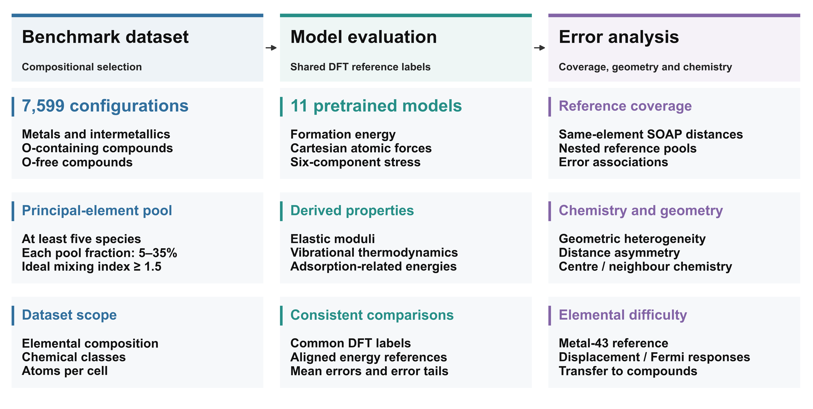
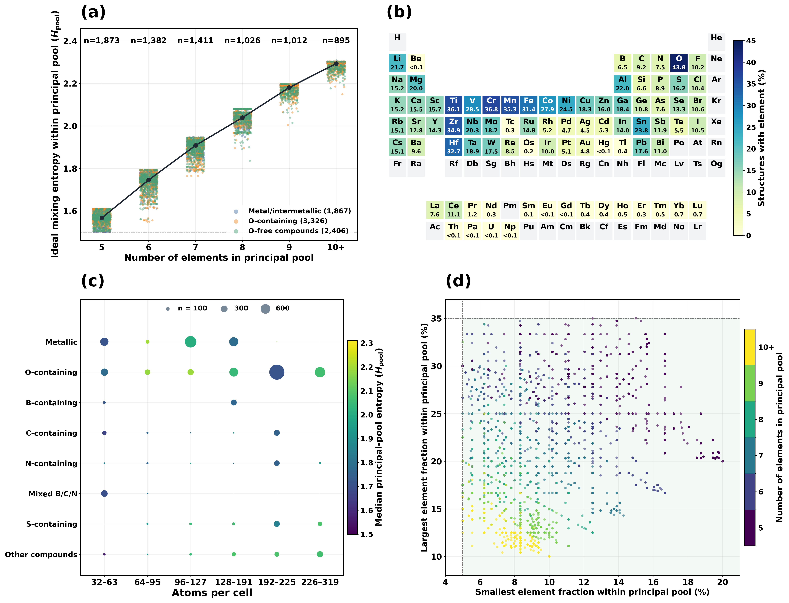
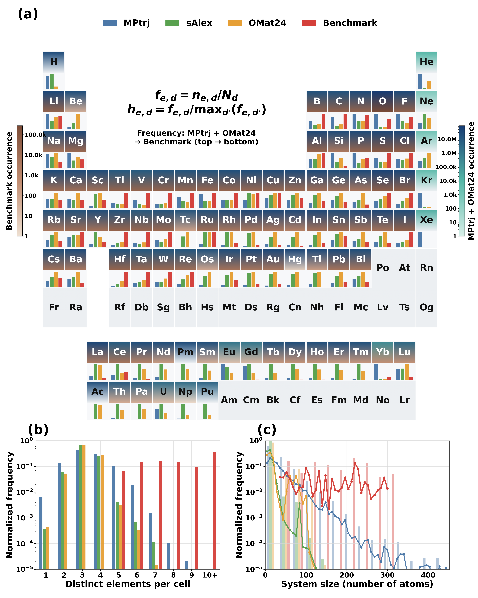
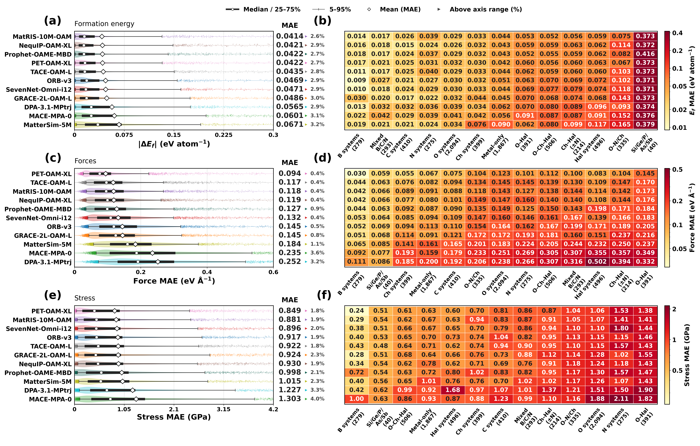
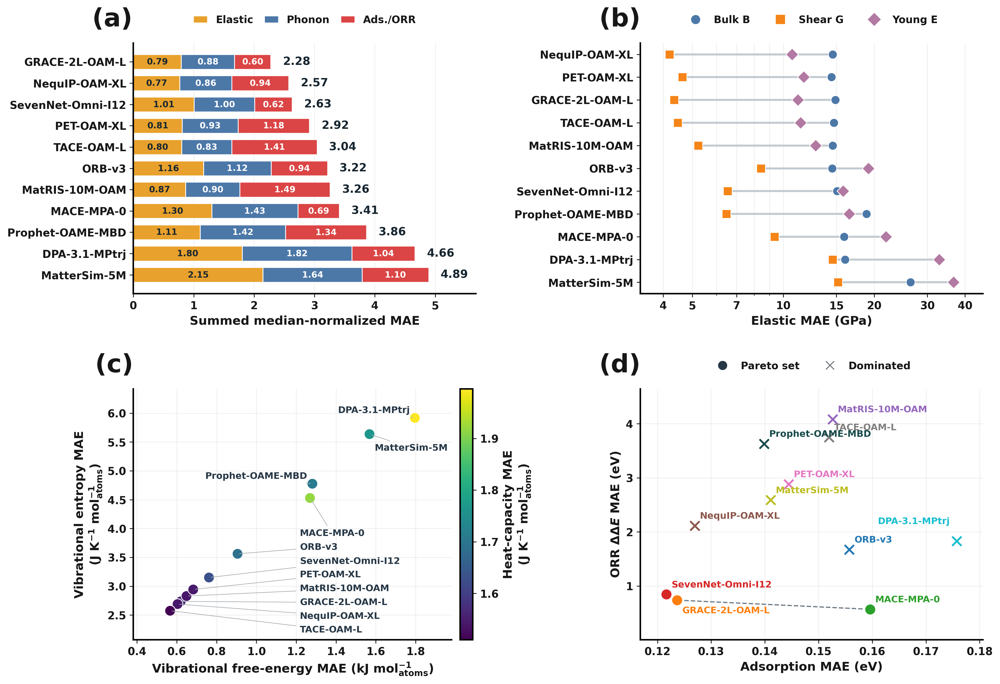
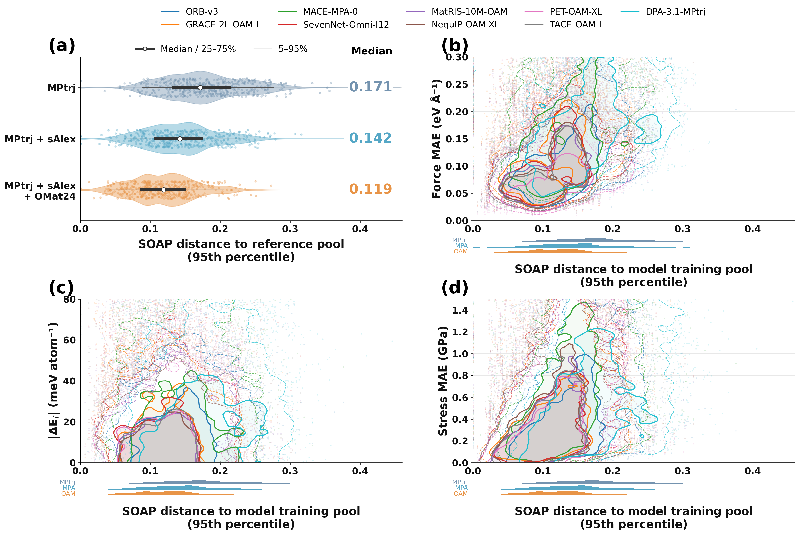
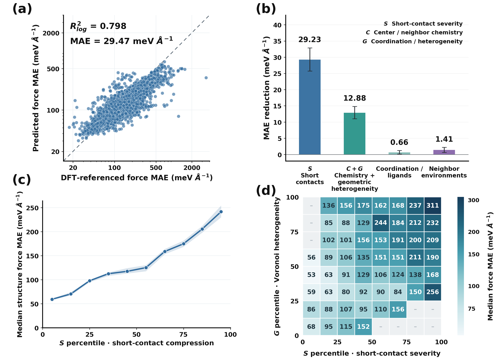
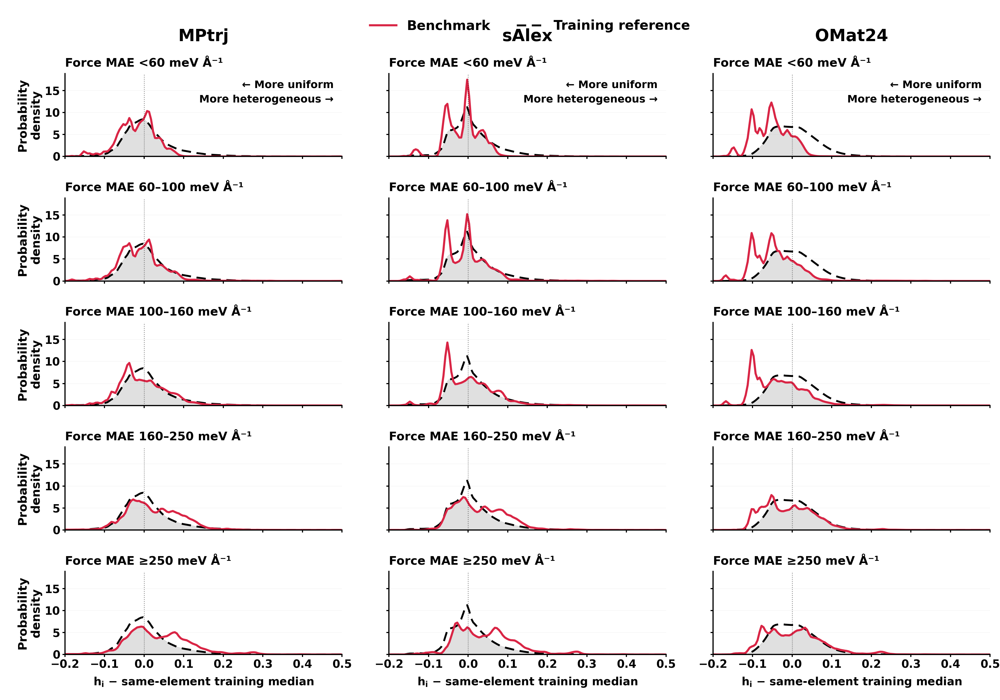
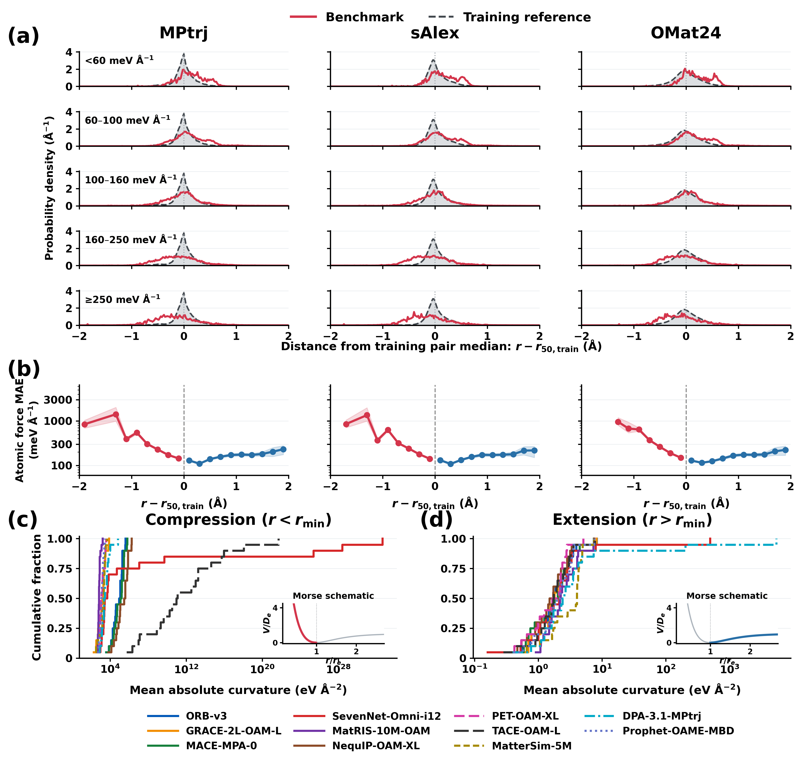
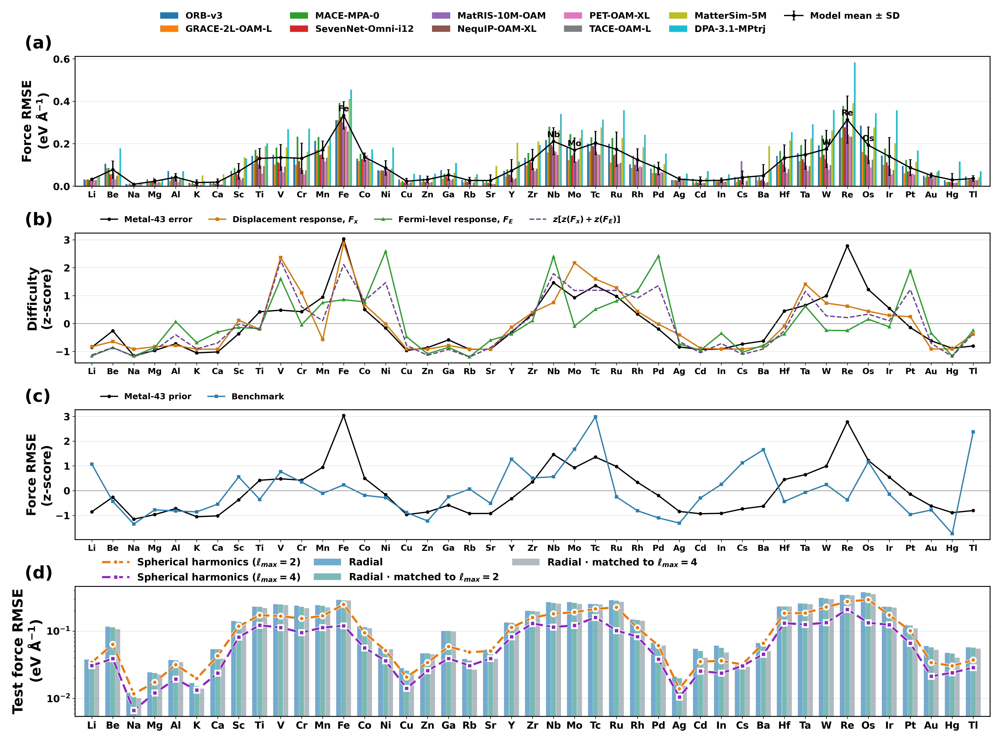

多组分材料的通用力场误差从哪里来：从环境覆盖追到压缩距离与元素响应
论文原文 ↗Hongwei Du、Dingyang Lv、Baole Wei 等，Origins of Universal Machine Learning Force-Field Errors in Multicomponent Materials，arXiv，2026。官方页面｜原始 PDF
把一种金属换成多种金属，或让不同阴离子混合占位，可以调节材料的导电、力学和催化性质，也会创造新的局部原子环境。通用机器学习力场虽然覆盖许多元素，其训练数据往往围绕弛豫、稳定材料搜索或已有结构扰动生成，与性质驱动的组成设计有不同采样重点。
本文以 7599 个多组分构型为共同考题，比较 11 个预训练力场，并顺着误差继续追问：是环境离训练数据更远，还是某些局部几何和元素响应本身更难拟合？核心发现是，环境覆盖能提示风险，而距离向压缩侧还是伸长侧偏移，以及元素的电子响应，进一步解释了相似覆盖程度下的误差差异。
方法怎样做：共同评估之后，逐层解释局部力误差
作者通过高熵设计、元素替换和阴离子混合构造数据，要求指定混合池至少有五种元素、各占 5%–35%，并满足组成均衡程度的筛选条件。最终包含 1867 个金属或金属间化合物、3326 个含氧构型和 2406 个无氧化合物。每个结构都有原子种类、坐标和周期晶胞，以及 DFT 能量、力和应力参照。

原图 1｜从组成设计得到共同测试结构，比较预训练力场，再依次分析环境覆盖、局部几何和元素响应。

原图 2｜混合元素数、元素频率、晶胞原子数和比例范围共同描述这套基准所覆盖的环境。
11 个模型直接计算相同结构。形成能比较先对齐单元素参考能，力和应力直接与 DFT 标签比较；总体统计给予每个构型相同权重。作者还把基准与 MPtrj、sAlex 和 OMat24 比较：这些参考数据覆盖广泛元素，而新基准更集中于多元素共存和较大晶胞，适合考察组成混合后的迁移。

原图 3｜完整化学式中的元素数和晶胞原子数显示，新基准在复杂组成及较大结构区域占比更高。
以同时含氧和卤素的 O–Hal 环境为例，先计算每个原子的预测力与 DFT 力之差，再从同一份坐标提取解释误差的描述。SOAP 将原子周围的元素和几何写成平滑邻居密度，再编码为向量；在中心元素相同的训练参考中寻找近邻，便得到环境距离。全结构采用这些原子距离的第 95 百分位，突出较陌生的一部分环境。
第二组描述保留更直观的化学与几何内容：元素身份、配位、相对共价半径的短接触，以及邻居距离是否均匀。Voronoi 分析按空间邻近关系划分区域，用共享面的面积给邻居距离加权；由距离离散程度得到局部几何异质性。作者将这些描述交给单独的误差预测器，检验加入何种信息能更好预测已有力场的误差。
接着，对每个元素对计算“当前距离减去训练参考中位距离”，保留偏移方向：负值为相对压缩，正值为相对伸长。最后用独立的 43 种单质金属数据比较元素拟合难度，并训练参数数量匹配的径向和角向表示。于是，覆盖、局部几何、距离方向和电子响应被接到同一条诊断链上。
主要结果：覆盖提示风险，压缩侧与元素差异细化了原因
共同基准显示模型强项随性质和化学环境改变
静态比较中，形成能最佳模型 MatRIS-10M-OAM 的平均误差为 0.0414 eV/atom；PET-OAM-XL 的力和应力误差最低，分别为 0.0941 eV/Å 和 0.849 GPa。O–Hal 环境在相近短接触区间内仍比单独卤素环境难算，显示局部化学组合提供了纯距离指标之外的信息。

原图 4｜左侧展示结构误差分布，右侧按化学类别拆分。三类性质分别排序，便于同时观察总体精度和特定环境表现。
作者进一步计算弹性、振动热力学与表面吸附相关能量。NequIP-OAM-XL 在弹性类领先，TACE-OAM-L 在振动类领先，GRACE-2L-OAM-L 在表面类组合表现及三类等权总分上领先。这些任务分别检验应变响应、原子位移响应和表面能量差，因而给出了不同的模型排序。

原图 5｜a 汇总三类性质，b、c 分别展示弹性和振动指标，d 比较两个表面能量指标。各任务的最佳组合并不相同。
相对压缩的局部距离对应更陡的误差增长
扩大训练参考池使环境距离中位数从 0.171 降到 0.119；多数模型中，最远四分位环境的力误差中位数，是最近四分位的 1.59–2.49 倍。覆盖差异与误差具有清晰关联，同时相近距离处仍分布着不同误差。

原图 6｜参考池扩展使距离减小；力和应力误差随距离增加更明显，同一距离附近仍有较宽的误差分布。
在误差预测器中，仅使用短距离描述的预测偏差为 42.35 meV/Å，加入局部化学与几何后降至 29.47 meV/Å，降低 30.4%。短接触和不均匀的邻居距离因此提供了额外解释信息。

原图 7｜增加描述后，误差预测更接近实际结果；短接触与较高距离异质性的组合对应更大的力误差。
按中心元素对齐 Voronoi 异质性后，高误差构型向更不均匀的环境扩展，但这些环境已与 OMat24 大量重叠。作者由此进一步分解：相似的距离离散程度，可能由不同的压缩、伸长组合产生。

原图 8｜红色为基准，虚线为训练参考，灰色为分布重叠。OMat24 对高异质性环境已有广泛覆盖，距离方向为进一步区分提供入口。
关键比较在元素对和距离偏移绝对值上进行匹配，再比较负偏移的压缩侧和正偏移的伸长侧。压缩侧平均力误差为 234–249 meV/Å，伸长侧为 128–129 meV/Å，前者为后者的 1.81–1.95 倍。分别采用三套训练参考的元素对中位距离，这种不对称都保留。

原图 9｜红色压缩支路的误差增长更陡；下方双原子扫描显示模型预测的压缩侧曲率更大，与短距离区域更敏感的相互作用响应相一致。
模型预测的成对作用曲线在压缩侧具有更大曲率，力随距离改变得更快。它为基准中的误差不对称提供了物理图景：同样大小的距离偏移，在短程排斥侧要求模型描述更陡的响应。
元素拟合难度具有电子响应线索，角向表示带来改善
独立 Metal-43 数据中，多个模型在 Fe、Nb、Mo/Tc、W、Re 和 Os 附近反复出现高误差。元素拟合难度与电子能带能量对原子位移、费米能级变化的响应相关，其总体趋势也出现在多组分体系的元素分辨误差中。局部几何和化学环境共同调节这种元素差异。

原图 10｜a–c 将单质拟合难度、电子响应和多组分误差联系起来；d 在相同数据划分及参数数量匹配条件下比较径向与球谐表示。
球谐函数将邻居方向展开为一组有明确旋转规则的基函数，使模型在径向距离之外显式处理角向关系。在参数匹配对照中，二阶表示改善 43 种元素中的 38 种，四阶改善 40 种，逐元素平均力均方根误差分别降低 19.1% 和 39.8%；七种困难元素的四阶平均降幅达到 50.8%。方向表示因此提供了提高拟合能力的具体途径。
对领域的贡献
这项研究把通用力场的多组分误差，从“训练覆盖是否充分”推进到具体的几何与电子响应。环境距离提供风险轮廓，元素对距离的正负偏移区分压缩与伸长，元素响应进一步解释不同化学环境的拟合难度。
对组成设计而言，力场选择可以同时围绕目标化学环境和目标性质展开；改进训练时，则可以关注易出错的压缩环境及困难元素的方向表达。共同基准和逐层分析将这些改进目标具体化，也说明扩大数据覆盖与改进模型表示能够相互配合。
附：完整原始摘要中文翻译
阴离子混合与高熵组成设计广泛用于调控材料性质，但通用机器学习力场对由此产生的局部环境的泛化能力，仍缺乏充分评估。现有训练数据集通过弛豫轨迹、以稳定性为导向的材料搜索和非平衡采样扩展化学与结构空间，而这些采样目标与性质驱动的组成设计不同。在此，我们构建了一个包含7,599个多组分计算构型的基准，其设计受到高熵设计、元素替换和阴离子混合的启发。我们以密度泛函理论为参照，评估11个预训练模型的能量、力和应力，并将评价扩展至弹性、振动及吸附相关性质。我们首先从训练参考覆盖出发研究力误差，继而考察局部几何异质性、距离方向性和元素响应。到训练参考环境的距离，揭示了覆盖差异与误差增加之间的定性关联，但在相近距离处仍存在显著的误差变化。按元素对齐的Voronoi分布表明，误差较高的构型向更大的几何异质性延伸。然而，OMat24已经广泛覆盖这些环境，因此有必要进一步检查其原子间距离变化及化学背景。相对于训练参考中的元素对距离中位数，将距离偏移分为压缩与伸长，揭示出显著的不对称性：误差在中位距离附近保持较低，在压缩侧急剧上升，在伸长侧则增长较弱。匹配元素对及距离偏移绝对值后，压缩侧的力误差为伸长侧的1.81—1.95倍。模型预测的成对相互作用曲线在压缩侧也表现出更大曲率，与压缩区和伸长区不同的相互作用敏感性相一致。元素响应有助于解释拟合难度如何随化学环境变化。在独立单质体系中，拟合难度与电子能带能量对原子位移和费米能级变化的响应相关，其总体趋势在多组分体系按元素解析的误差中仍然保留。在参数数量匹配的比较中，二阶和四阶球谐表示分别降低了43种元素中38种和40种元素的测试力误差，而元素拟合难度的差异仍然存在。这项分析将定性的覆盖差异与同力误差相关的具体几何和电子响应联系起来。这些发现为实验组成设计中的力场选择提供依据，并指出了训练数据采样和模型表示的改进目标。